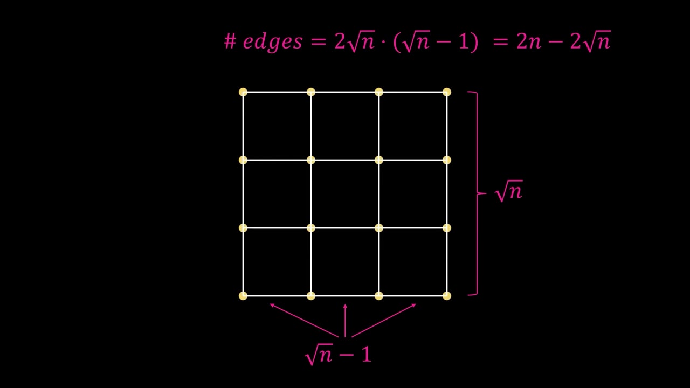
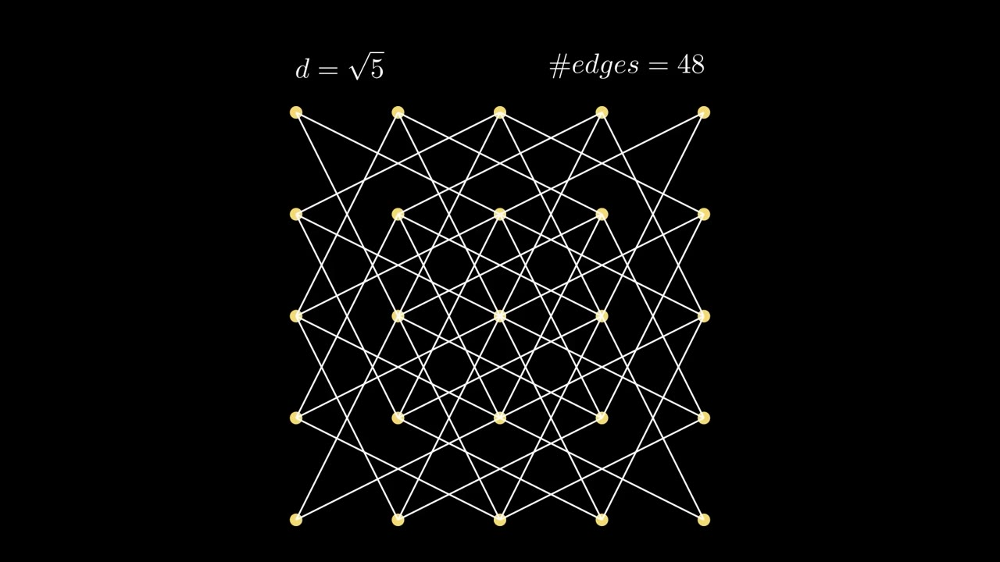
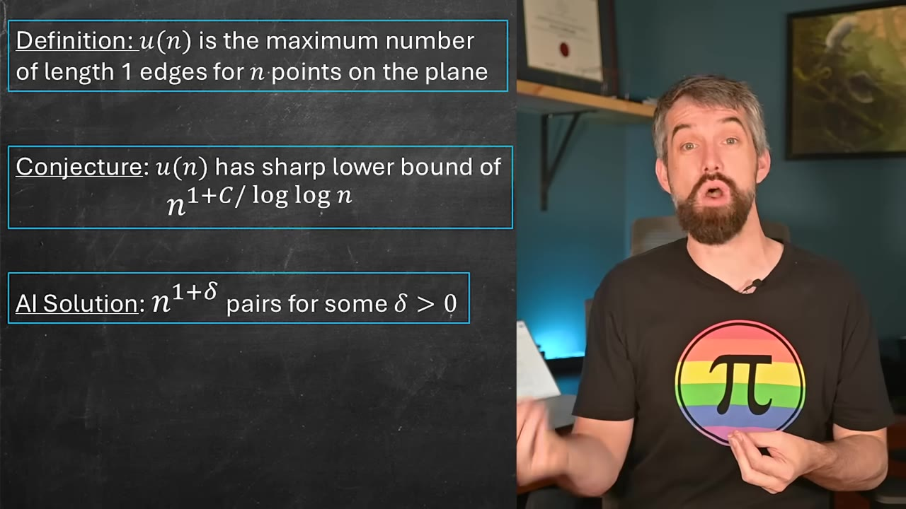
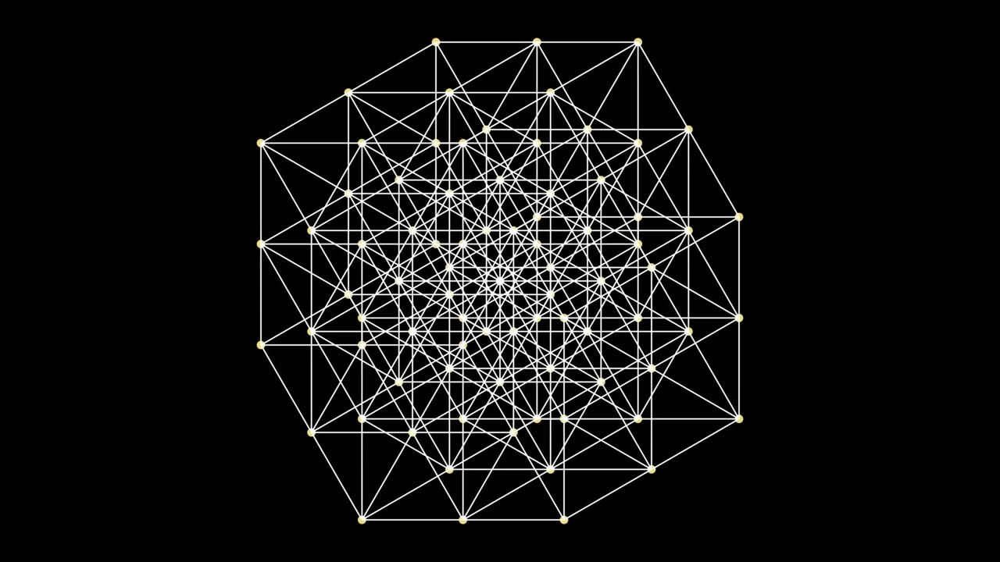
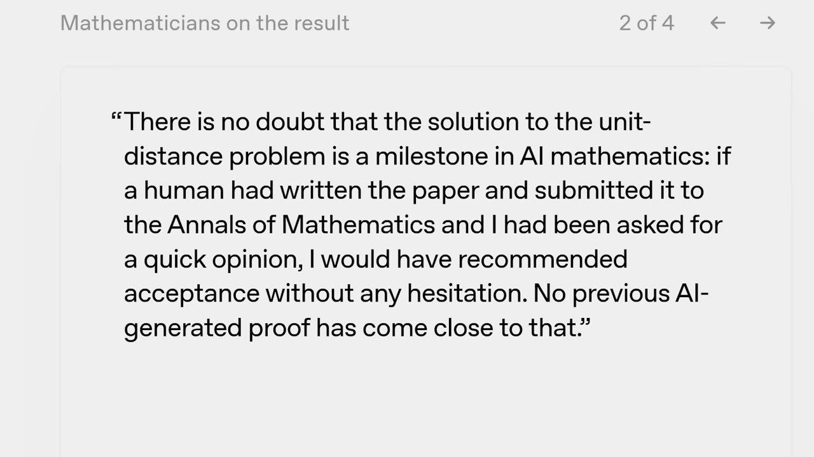

An OpenAI model beat the 1946 lower bound on the unit-distance problem — the first time AI has cracked a famous, well-studied open conjecture rather than a tidy or overlooked one.
Watch on YouTubePlace N points on the plane and count how many pairs sit exactly distance one apart. A path of n dots gives n − 1 such edges; a √n × √n square lattice does far better. Each direction contributes √n rows of √n − 1 edges, so the total is 2√n·(√n − 1) = 2n − 2√n — and as n grows, the linear term dominates. This is on the order of n.

Erdős's 1946 idea: start from a unit lattice, but don't restrict yourself to edges of length one. Count every distance that appears, take whichever shows up most, and shrink the whole figure so that distance becomes one. A 25-dot lattice gives 40 unit edges — but the length-√5 step (two over, one up) appears 48 times. Shrink by √5 and you've beaten the plain grid.

This pushes the lower bound up to n^(1 + C/log log n). Because log log n runs off to infinity, that exponent slides toward 1 — the bound is only just above linear, but Erdős proved it with number theory, and it held for decades.
The open question, proposed in 1946: is that bound sharp — meaning no construction can do better? For decades mathematicians tried either to beat it or to prove it couldn't be beaten. Neither happened, until now.

The actual proof is beyond the video, but Bazett offers a visual hint: overlapping square lattices offset by angles of 2π/3, a suggestion he credits to Will Sawin. The real paper builds its lattice in much higher-dimensional space and then projects it down onto the plane in a vaguely analogous way.

AI has proven theorems before, including ones from the Erdős problem list — but there was always a caveat: an obscure problem, an uninteresting one, or a result that turned out to already sit in the literature. This is different. The unit-distance problem is famous, well-studied, and has resisted many mathematicians over many years.
This one is a problem that is famous and well-known and well-studied, and many mathematicians have sunk their teeth into it and tried it and failed over many, many years.— Dr. Trefor Bazett
OpenAI shipped a companion paper collecting commentary from mathematicians in the area, including Fields Medalist Timothy Gowers. The read across their notes is that this is treated as a genuine milestone, not a curiosity — and the proof reportedly leans on novel ideas in algebraic number theory.

There is no doubt that the solution to the unit-distance problem is a milestone in AI mathematics: if a human had written the paper and submitted it to the Annals of Mathematics and I had been asked for a quick opinion, I would have recommended acceptance without any hesitation. No previous AI-generated proof has come close to that.— Timothy Gowers